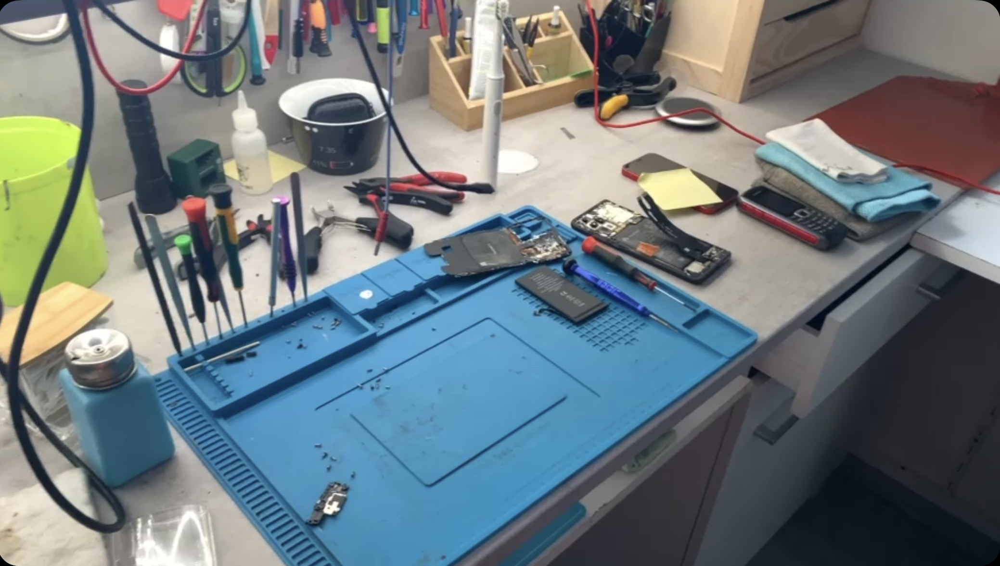

<!DOCTYPE html>
<html lang="fr">
<head>
    <meta charset="UTF-8">
    <meta name="viewport" content="width=device-width, initial-scale=1.0">
    <title>Microsoudure Électronique</title>
    <link rel="stylesheet" href="style.css?v=3">
    <link rel="icon" type="image/png" href="favicon.png?v=2">
</head>
<body>

    <!-- TON CODE ACTUEL ICI -->
    <div class="container">
        <!-- ... tout le contenu que tu viens d'envoyer ... -->
    </div>

    <script src="script.js"></script>
</body>
</html>

<header class="header">
    <div class="container header__wrapper">
        <a href="index.html"></a>
        
        <!-- 1. Ajout de id="nav-menu" -->
        <nav class="nav" id="nav-menu">
            <ul class="nav__list">
                <li><a href="index.html" class="nav__link">Accueil</a></li>
                <li><a href="index.html#services" class="nav__link">Services & Tarifs</a></li>
                <li><a href="contact.html" class="nav__link">Contact & Devis</a></li>
                <li><a href="a-propos.html" class="nav__link">À Propos</a></li>
            </ul>
        </nav>

        <!-- 2. Ajout de la classe header__btn (pour le masquer sur mobile) -->
        <a href="contact.html" class="btn btn--primary header__btn">Devis gratuit</a>

        <!-- 3. Ajout du bouton burger -->
        <button class="burger" id="burger-menu" aria-label="Ouvrir le menu">
            <span></span>
            <span></span>
            <span></span>
        </button>
    </div>
</header>

<div class="container">

    <!-- HERO SECTION -->
    <section class="micro-hero">
        <h1>Microsoudure <span>Électronique</span></h1>
        <p>Votre appareil ne s'allume plus ou a été déclaré "non réparable" ? Nous intervenons au composant près directement sur la carte mère.</p>
        <a href="contact.html" class="btn-primary">
            <span>Demander un diagnostic & devis</span>
            <svg width="20" height="20" viewBox="0 0 24 24" fill="none" stroke="currentColor" stroke-width="2"><path d="M5 12h14M12 5l7 7-7 7"/></svg>
        </a>
    </section>

    <!-- LE PRINCIPE ET LE BUT -->
    <section class="micro-concept">
        <div class="micro-concept__text">
            <h2>En quoi consiste la microsoudure ?</h2>
            <p>
                Contrairement à un remplacement classique d'écran ou de batterie, la microsoudure consiste à réparer les éléments microscopiques de la <strong>carte mère</strong> (puces, puces de gestion de charge, filtres, condensateurs).
            </p>
            <p style="margin-top: 15px;">
                <strong>Le but principal :</strong> Offrir une seconde vie aux appareils condamnés par d'autres ateliers et <strong>sauvegarder vos données personnelles</strong> lorsqu'aucune autre solution n'existe.
            </p>
        </div>
        <div class="micro-concept__image">
            
        </div>
    </section>

    <!-- POSSIBILITÉS DE RÉPARATIONS -->
    <h2 class="section-title">Pannes & Interventions prises en charge</h2>
    <div class="micro-grid">

        <div class="micro-card">
            <div class="micro-card__icon">
                <svg width="24" height="24" viewBox="0 0 24 24" fill="none" stroke="currentColor" stroke-width="2"><rect x="2" y="7" width="20" height="10" rx="2"/><path d="M6 11h.01M10 11h.01"/></svg>
            </div>
            <h3>Problèmes de Charge</h3>
            <p>Appareil qui ne prend plus la charge, chauffe anormalement ou connecteur arraché (Puce Tristar/Hydra, puces USB-C, etc.).</p>
        </div>

        <div class="micro-card">
            <div class="micro-card__icon">
                <svg width="24" height="24" viewBox="0 0 24 24" fill="none" stroke="currentColor" stroke-width="2"><path d="M18.36 6.64a9 9 0 1 1-12.73 0"/><line x1="12" y1="2" x2="12" y2="12"/></svg>
            </div>
            <h3>Appareil Hors Tension</h3>
            <p>Recherche de court-circuit sous caméra thermique et remplacement des condensateurs ou composants défaillants.</p>
        </div>

        <div class="micro-card">
            <div class="micro-card__icon">
                <svg width="24" height="24" viewBox="0 0 24 24" fill="none" stroke="currentColor" stroke-width="2"><rect x="4" y="4" width="16" height="16" rx="2"/><line x1="9" y1="9" x2="15" y2="15"/><line x1="15" y1="9" x2="9" y2="15"/></svg>
            </div>
            <h3>Affichage & Rétroéclairage</h3>
            <p>Écran noir alors que le téléphone vibre, absence de luminosité (panne de Backlight ou connecteur FPC abîmé).</p>
        </div>

        <div class="micro-card">
    <div class="micro-card__icon">
        <svg width="24" height="24" viewBox="0 0 24 24" fill="none" stroke="currentColor" stroke-width="2"><polygon points="11 5 6 9 2 9 2 15 6 15 11 19 11 5"/><path d="M15.54 8.46a5 5 0 0 1 0 7.07"/></svg>
    </div>
    <h3>Pannes Audio / Réseau</h3>
    <p>Problème de micro en appel (Audio IC sur iPhone 7/8), perte de réseau constante ou Wi-Fi grisé.</p>
</div>

        <div class="micro-card">
            <div class="micro-card__icon">
                <svg width="24" height="24" viewBox="0 0 24 24" fill="none" stroke="currentColor" stroke-width="2"><path d="M12 2.69l5.66 5.66a8 8 0 1 1-11.31 0z"/></svg>
            </div>
            <h3>Désoxydation & Dégâts Liquides</h3>
            <p>Nettoyage aux ultrasons, traitement anti-corrosion et reconstruction de pistes brûlées après oxydation.</p>
        </div>

        <div class="micro-card">
            <div class="micro-card__icon">
                <svg width="24" height="24" viewBox="0 0 24 24" fill="none" stroke="currentColor" stroke-width="2"><path d="M21 15v4a2 2 0 0 1-2 2H5a2 2 0 0 1-2-2v-4"/><polyline points="17 8 12 3 7 8"/><line x1="12" y1="3" x2="12" y2="15"/></svg>
            </div>
            <h3>Récupération de Données</h3>
            <p>Intervention ciblée dans le seul but d'extraire vos photos, contacts et documents si la réparation globale est impossible.</p>
        </div>

    </div>

    <!-- AVANTAGES AVEC ATELIER INTERNE -->
    <section class="advantages-box">
        <h2 class="section-title" style="margin-bottom: 10px;">Pourquoi passer par notre atelier ?</h2>
        <p style="text-align: center; color: #94a3b8; font-size: 0.95rem;">La plupart des boutiques sous-traitent la microsoudure. Pas nous.</p>

        <div class="advantages-grid">
            <div class="adv-item">
                <div class="adv-item__icon">✓</div>
                <div>
                    <h4>Réparation 100% sur place</h4>
                    <p>Aucun envoi chez un tiers : votre appareil reste dans notre laboratoire sécurisé.</p>
                </div>
            </div>

            <div class="adv-item">
                <div class="adv-item__icon">✓</div>
                <div>
                    <h4>Équipement de Haute Précision</h4>
                    <p>Microscopes trinoculaires, stations d'air chaud réglables et caméra thermique infrarouge.</p>
                </div>
            </div>

            <div class="adv-item">
                <div class="adv-item__icon">✓</div>
                <div>
                    <h4>Économique & Écologique</h4>
                    <p>Changer un composant à 5 € coûte bien moins cher que remplacer la carte mère entière.</p>
                </div>
            </div>

            <div class="adv-item">
                <div class="adv-item__icon">✓</div>
                <div>
                    <h4>Diagnostic Clair & Sans Surprise</h4>
                    <p>Nous analysons le problème et validons le devis avec vous avant toute intervention lourde.</p>
                </div>
            </div>
        </div>
    </section>

    <!-- BANNIÈRE FINALE CTA -->
    <section class="micro-cta">
        <h2>Un doute sur la faisabilité de votre réparation ?</h2>
        <p>Expliquez-nous la panne de votre matériel, nous vous répondons rapidement avec une première estimation.</p>
        <a href="contact.html" class="btn-primary">
            <span>Décrire ma panne / Demander un devis</span>
        </a>
    </section>

</div>

<footer class="footer">
        <div class="container footer__grid">
            <div class="footer__col">
                
                <p class="footer__description">Votre atelier de référence pour la réparation de téléphones, ordinateurs, consoles et travaux de microsoudure à Vesoul.</p>
            </div>

            <div class="footer__col">
                <h4 class="footer__title">Navigation</h4>
                <ul class="footer__links">
                    <li><a href="index.html">Accueil</a></li>
                    <li><a href="index.html#services">Services & Tarifs</a></li>
                    <li><a href="contact.html">Contact & Devis</a></li>
                    <li><a href="a-propos.html">À Propos</a></li>
                </ul>
            </div>

            <div class="footer__col">
                <h4 class="footer__title">Contact</h4>
                <p class="footer__contact-item">
                    <svg class="icon footer__icon" viewBox="0 0 24 24"><path d="M21 10c0 7-9 13-9 13s-9-6-9-13a9 9 0 0 1 18 0z"></path><circle cx="12" cy="10" r="3"></circle></svg>
                    <span>16 Av. de la Gare, 70000 Vesoul</span>
                </p>
                <p class="footer__contact-item">
                    <svg class="icon footer__icon" viewBox="0 0 24 24"><path d="M22 16.92v3a2 2 0 0 1-2.18 2 19.79 19.79 0 0 1-8.63-3.07 19.5 19.5 0 0 1-6-6 19.79 19.79 0 0 1-3.07-8.67A2 2 0 0 1 4.11 2h3a2 2 0 0 1 2 1.72 12.84 12.84 0 0 0 .7 2.81 2 2 0 0 1-.45 2.11L8.09 9.91a16 16 0 0 0 6 6l1.27-1.27a2 2 0 0 1 2.11-.45 12.84 12.84 0 0 0 2.81.7A2 2 0 0 1 22 16.92z"></path></svg>
                    <a href="tel:0981035461">09 81 03 54 61</a>
                </p>
                <p class="footer__contact-item">
                    <svg class="icon footer__icon" viewBox="0 0 24 24"><path d="M4 4h16c1.1 0 2 .9 2 2v12c0 1.1-.9 2-2 2H4c-1.1 0-2-.9-2-2V6c0-1.1.9-2 2-2z"></path><polyline points="22,6 12,13 2,6"></polyline></svg>
                    <a href="mailto:contact@smart-repare.fr">contact@smart-repare.fr</a>
                </p>
            </div>

            <div class="footer__col">
                <h4 class="footer__title">Réseaux sociaux</h4>
                <div class="footer__socials">
                    <a href="https://www.facebook.com/Smart.Repare.Vesoul/" target="_blank" rel="noopener" class="social-btn">Facebook</a>
                    <a href="https://www.instagram.com/smart.repare.vesoul/?hl=fr" target="_blank" rel="noopener" class="social-btn">Instagram</a>
                </div>
            </div>
        </div>

        <div class="footer__bottom">
            <div class="container footer__bottom-wrapper">
                <p>&copy; 2026 Smart Repare - Tous droits réservés.</p>
                <ul class="footer__legal-links">
                    <li><a href="mentions-legales.html">Mentions légales</a></li>
                    <li><a href="cgv.html">CGV</a></li>
                </ul>
                <p class="footer__credit">Powered by <a href="https://studiopixeldesigner.github.io/pixeldesigner/" target="_blank" rel="noopener">Pixel Designer</a></p>
            </div>
        </div>
    </footer>